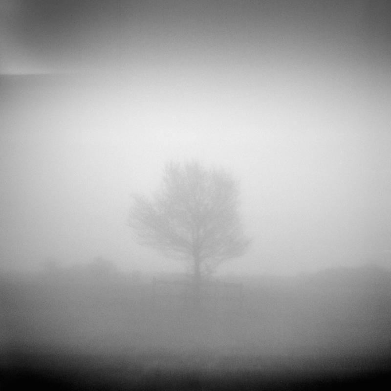
Constructed views
Constructed cameras for constructed landscapes.
01 May 2018
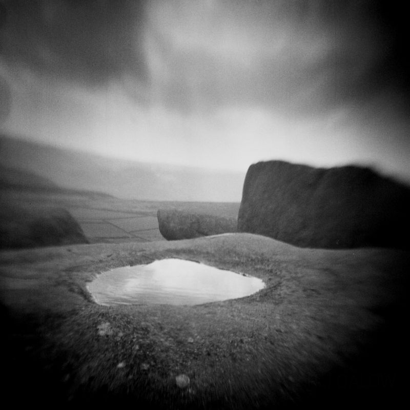
Premise
Using improvised makeshift camera and lens to negate myopic picturesque modes of representation of the constructed British countryside.
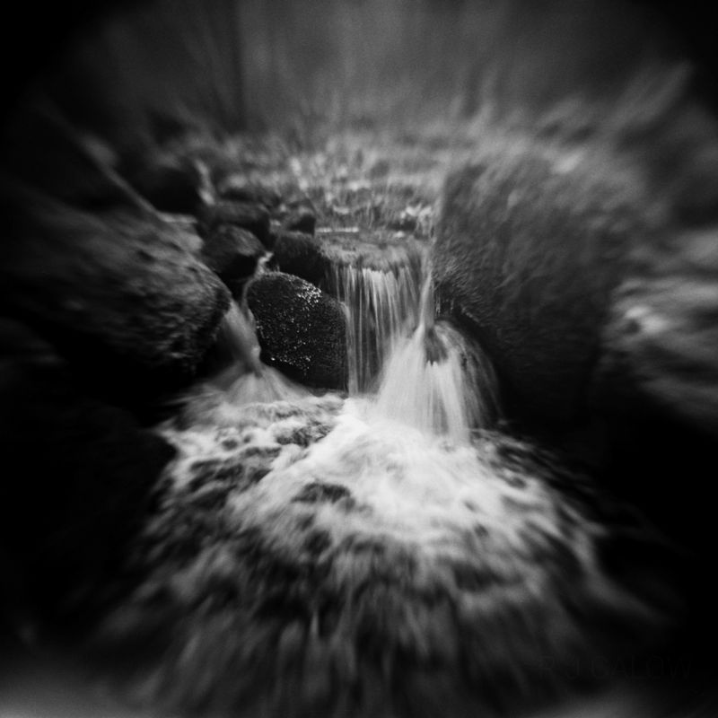
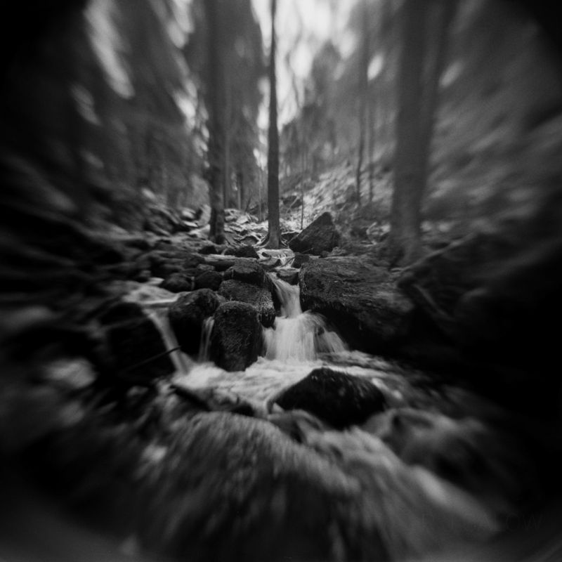
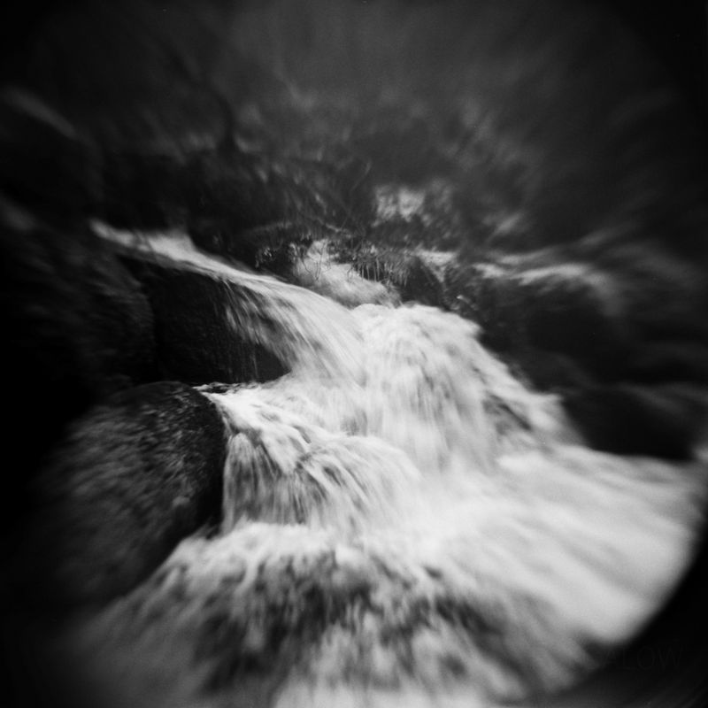
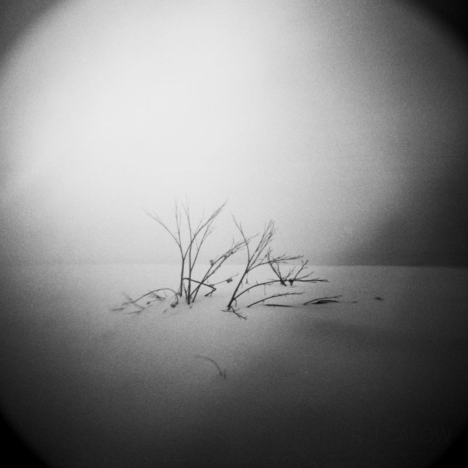
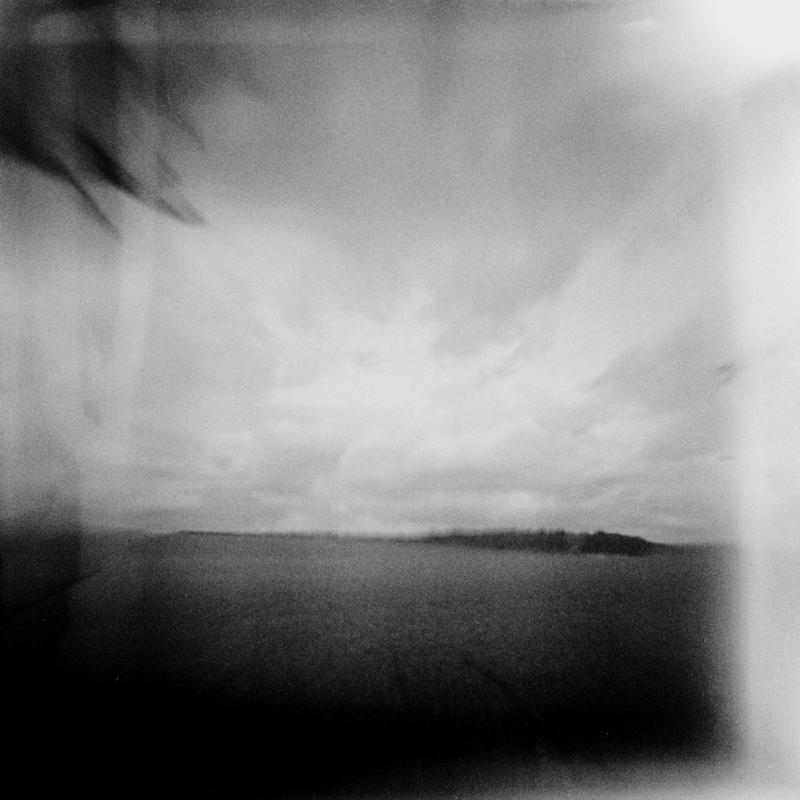
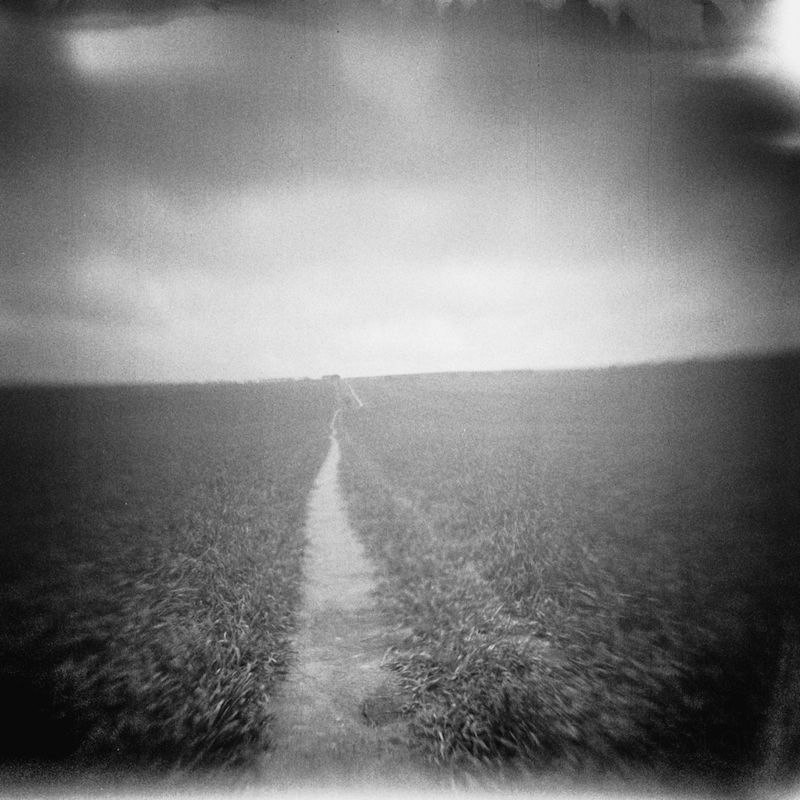
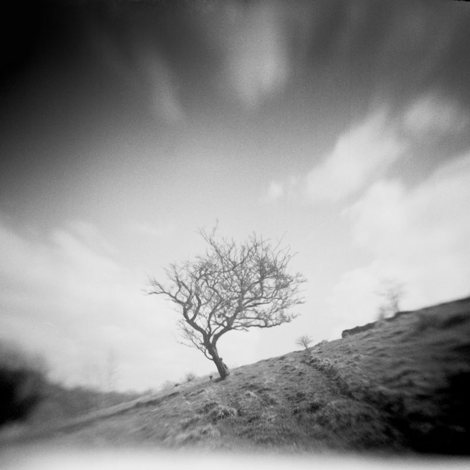
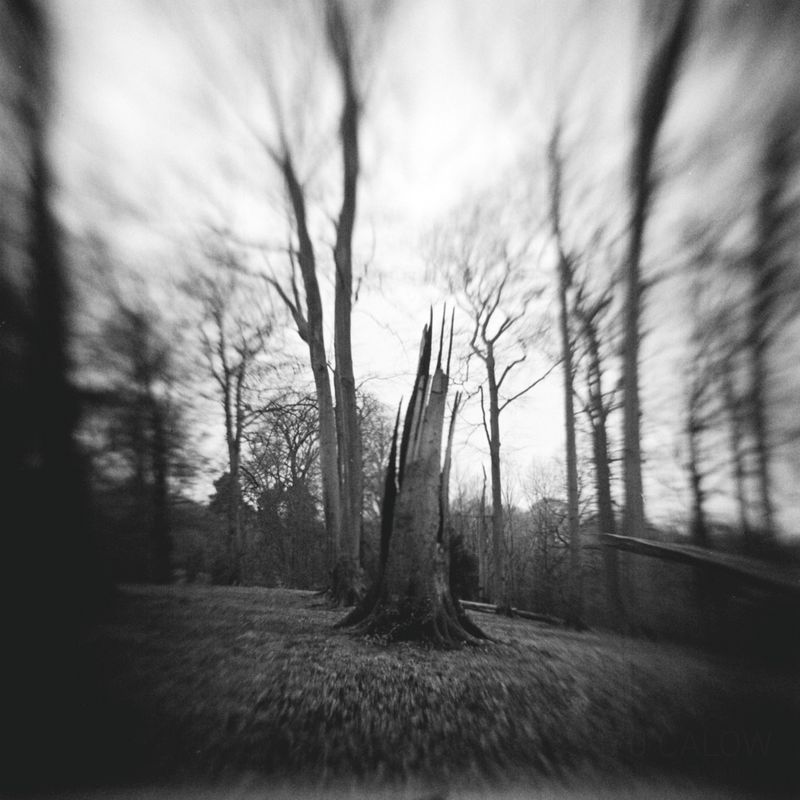
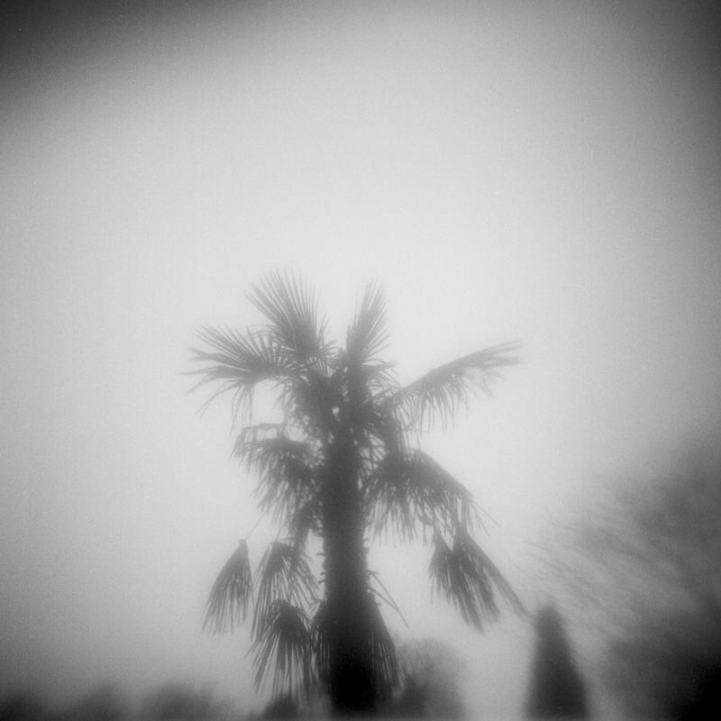
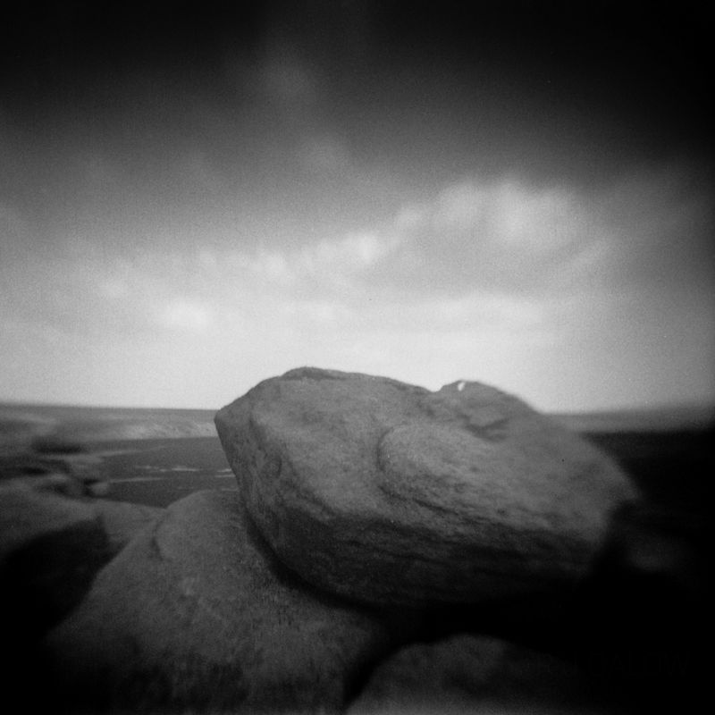